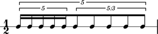

Why LilyPond is right for Abjad
It took us several years to settle on LilyPond. Early versions of Abjad wrote out MIDI files for input to Finale and Sibelius. Later, more typographhically powerful versions of Abjad wrote out cleartext .pbx files for input into Leland Smith's SCORE. But over time we found LilyPond superior to Finale, Sibelius and SCORE. Here we give some examples to show why.
Nested tuplets works out of the box
LilyPond uses just one construct to create tuplets. Nest these recursively to make tuplets as deep as you want.
\new RhythmicStaff {
\times 4/5 {
\times 4/5 { c'16 c'16 c'16 c'16 c'16 }
\times 3/5 { c'8 c'8 c'8 c'8 c'8 }
}
}

We like LilyPond's tuplet input syntax because it works exactly the same way as any other recursive programming structure, such as, for example, any collection of nested attribute or element tags in XML. By way of comparison, until the relatively recent appearance of version 5 of the ManuScript scripting language, Sibelius offered no programmatic way to create tuplets at all. (For our guess as to why, see the last section of this page on why measures shouldn't dominate your object model.)
Broken tuplets work out of the box
Engraving seven septuplets is easy. It's harder to engrave four septuplets, then something else, then three more septuplets. In LilyPond, such broken tuplets work out of the box.
\new Staff {
\times 4/7 { c'16 c'16 c'16 c'16 }
c'8 c'8
\times 4/7 { c'16 c'16 c'16 }
}

We like this because it shows that LilyPond understands tuplets as carrying a fixed multiplier rather than fitting into a fixed duration. This means that LilyPond sees each of the first notes above as carrying a duration equal to exactly 1/16 * 4/7 == 1/28 of a whole note. How many 1/28th notes you choose to string together is left to the user. LilyPond is perfectly happy to string seven 1/28th notes together in the usual way. But LilyPond is also perfectly willing to string only four or three 1/28th notes together, as we've done here. The point is that LilyPond is happy to multiply any note anywhere in any score by any rational factor without placing a constraint on the total number of such notes taken in sequence. This is what we mean when we point to the idea that LilyPond understands tuplets as carrying a fixed multiplier. Conversely, when we think of seven septuplets "in the time of" four, we're thinking of tuplets as fitting into fixed duration. That is, we're thinking about the total duration into which the complete figure will fit. But what's important here is this: fixed-multiplier tuplets generalize fixed-duration tuplets. LilyPond's multiplier-based approach to tuplets lets us create not only the complete tuplets we would expect but many more besides.
Nonbinary meters work out of the box
We can rewrite the rhythm above in another way.
\new Staff {
\time 4/28 c'16 c'16 c'16 c'16 |
\time 2/8 c'8 c'8 |
\time 3/28 c'16 c'16 c'16 |
}
The time signatures 4/28 and 3/28 here have a denominator not equal to 4, 8, 16 or any other nonnegative integer power of two. Abjad calls time signatures of this form nonbinary meters. Nonbinary meters break many engraving programs. But, in LilyPond, nonbinary meters work out of the box.
Lilypond models the musical measure correctly
Most engraving packages make the concept of the measure out to be far more important than it should be. We see evidence of this wherever an engraving package makes it difficult or impossible for a long note cross over a barline (as can happen in Medieval music) or for the notes in a tuplet to cross over a barline (as can happen in New Music). Both difficulties come from working the idea of measure-as-container deep into engraving package object model. There is a competing way to model the musical measure and we might call this the measure-as-background way of thinking about things. When we look at the development of western notation, we see that the system started absent any concept of the barline, gradually introduced the idea, but has since retreated from the inviolability of the convention. Engraving packages that pick out a solidy Classical or Romantic understanding of the barline subscribe to the measure-as-container view of things and oversimplify the problem. One result of which is to render certain barline-crossing rhythmic figures either an inelegant hack or an outright impossibility. The measure-as-background model fits the concept of the musical measure into the rhythmic model in a more general way. LilyPond eschews the measure-as-container model beloved of the common practice in favor of the measure-as-background model characteristic of both the earlier and later uses of the western notation. And Abjad agrees.